Дисципліна: Практика з комп'ютерних мереж та систем
Лекція 2. Загальна характеристика технології PON
Мета лекції: визначення специфіки побудови мережі за технологією PON, формування глибокого розуміння принципів передачі даних, розгляд сучасного стану технології, висвітлення технічних характеристик апаратного забезпечення та інженерних розрахунків різних топологій мережі.
План вивчення:
- Технологія PON: генеза, специфіка побудови та сучасний стан.
- Принципи передачі даних у мережах PON Downstream/Upstream.
- Апаратне забезпечення та ODN (активне та пасивне обладнання).
- Інженерія топологій PON: «Зірка», «Дерево», «Шина» та їх оптичні бюджети.
Ключові терміни: PON, GEPON, GPON, XGS-PON, OLT, ONU, ODN, FOB, дільники (FBT, PLC), оптичний патчкорд, пігтейл.
1. Технологія PON: генеза, специфіка побудови та сучасний стан
Реаліями сьогодення є масштабне поширення процесів комп'ютеризації та повний перехід до електронного документообігу на підприємствах. Для ефективного забезпечення передачі інформації актуальним постає питання створення надійного середовища для обміну даними. Розробка сучасних комп'ютерних мереж повинна враховувати географічне розташування вузлів, необхідний рівень надійності роботи мережі, специфіку монтажу та вартість обладнання.
При проєктуванні міських мереж ділянки з багатоповерховими забудовами традиційно обслуговуються технологіями FTTB/FTTH. На противагу цьому, для об'єднання в мережу одноповерхових будинків (приватного сектора) найбільш уживаною і фінансово ефективною є технологія PON, яка дозволяє економно використовувати ресурси магістральної оптоволоконної мережі.
Визначення. PON (Passive Optical Network – пасивна оптична мережа) — це інноваційна технологія широкосмугового мультисервісного доступу по оптичному волокну. Її найголовнішою інженерною відмінністю є те, що активне (залежне від електрики) обладнання розташоване виключно на стороні центральної серверної станції та на стороні кінцевого абонента. На всьому шляху доставки сигналу електрика відсутня.
1.1. Історія виникнення і стандартизація
Технологія ідеально підходить як для віддалених малонаселених пунктів, так і для міського приватного сектора. Історично розвиток технології PON відбувався через прийняття новіших специфікацій:
- APON (ATM PON): У 1995 році 7 компаній об'єдналися в консорціум FSAN, а вже у 1998 р. був створений перший стандарт ITU-T G.983.1, заснований на транспорті мікропакетів АТМ (комірок по 53 байти);
- BPON (Broadband PON): Стандарт (2001 р.), що забезпечив розширення спектрального діапазону для передачі додаткових сервісів (відео/ТБ) поверх даних в одній мережі;
- EPON (Ethernet PON): Розробка на базі стандарту Ethernet IEEE 802.3ah з використанням МРСР-протоколу управління;
- GPON (Gigabit PON): Стандарт (2003 р.) із високою швидкістю передачі від 622 Мбіт/с до 2,5 Гбіт/с;
- GEPON (Gigabit Ethernet PON): Найбільш поширена у свій час технологія побудови пасивних оптичних мереж. Швидкість передачі «туди» і «назад» становить 1 Гбіт/с, при цьому на одному волокні можуть перебувати до 64 кінцевих пристроїв. Вона здобула масову любов провайдерів завдяки низькій вартості електроніки.
1.2. Сучасний стан технологій PON у світі (2026 рік)
Хоча в Україні величезна кількість мереж була побудована на базі протоколу GEPON, сьогодні абсолютним світовим стандартом індустрії є GPON (який дозволяє підключати 128 абонентів на порт зі швидкостями до 2,5 Гбіт/с). Разом із тим прогресивні провайдери масово переходять на XGS-PON, який надає цілковито симетричні 10 Гбіт/с до абонента для трансляції 4K/8K відео та інтеграції систем розумного міста.
Важливо для практики: Незважаючи на перехід сучасних провайдерів на GPON / XGS-PON, у подальших практичних проєктах ми будемо використовувати класичне обладнання GEPON (наприклад, термінали BDCOM OLT P3310B). Це свідомий вибір: фізична оптоволоконна інфраструктура (кабелі, дільники, розрахунки оптичного бюджету) для GEPON і GPON абсолютно ідентична. Водночас апаратне забезпечення GEPON є найбільш зрозумілим, гнучким та ідеальним для навчання фундаментальним навичкам конфігурування.
Переваги PON як оптичного середовища незаперечні: низькі витрати на технічне обслуговування (відсутність комутаторів на стовпах), можливість поетапного розширення без порушення роботи мережі, побудова мережі великого села всього на одному загальному волокні, багатофункціональність послуг (Інтернет + ТБ) та абсолютна надійність до погодних умов.
2. Принципи передачі даних у мережах PON (WDM і TDMA)
Відмітною рисою PON є використання єдиного волокна для десятків абонентів. Щоб уникнути змішування сигналів (колізій), використовується технологія спектрального ущільнення WDM (Wavelength Division Multiplexing), яка розносить потоки за різними "кольорами" (довжинами хвиль) лазера:
- Прямий потік інформації (Downstream): Сигнал йде від станції провайдера до абонента на довжині хвилі 1490 нм. Провайдер використовує метод широкомовлення (Broadcast) — весь без винятку трафік відправляється по дереву до кожної домівки на лінії. Однак кожне абонентське обладнання має унікальний логічний ключ і вміє "відсіювати" чужий трафік, лишаючи тільки той, що призначався йому.
- Зворотний потік (Upstream): Від абонента до провайдера. Використовується хвиля 1310 нм. Оскільки одночасно багато клієнтів намагаються передати дані назад в те саме волокно, використовується принцип множинного доступу з поділом у часі TDMA (Time Division Multiple Access). Станція OLT суворо роздає квоти часу кожному абоненту на долі мілісекунд: "зараз передаєш ти, а інший мовчить". Це унеможливлює зіткнення лазерних імпульсів всередині дільників.
- Кабельне телебачення (CaTV): Іноді у волокно підмішують третю хвилю 1550 нм виключно для трансляції телевізійного аналогового чи цифрового сигналу, що виводиться окремим RF-конектором у абонента.
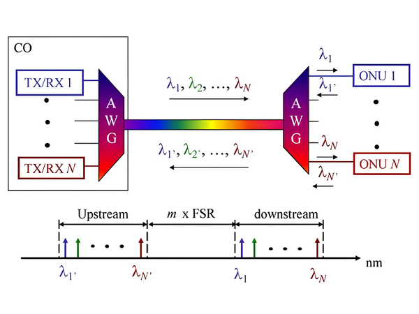
Рис. 2.1. Фізична та логічна архітектура передачі даних Downstream та Upstream
Розбір схеми (Рис. 2.1): Як демонструє спектрограма (нижній графік), технологія спектрального ущільнення WDM забезпечує надійну ізоляцію інформаційних потоків. У центральному офісі (CO) та на боці абонентів встановлені фазовані хвилеводні решітки (AWG — Arrayed Waveguide Grating). Вони виконують функцію мультиплексора/демультиплексора, об’єднуючи окремі довжини хвиль (λ1, λ2 ... λN) від різних передавачів (TX) у спільне оптичне волокно.
На шкалі довжин хвиль (нм) чітко видно, що висхідний (Upstream) та низхідний (Downstream) канали спектрально рознесені на відстань, кратну вільному спектральному діапазону (m × FSR). Такий значний розрив між діапазонами запобігає виникненню перехресних завад і гарантує, що потужний вихідний сигнал не перевантажить чутливі приймачі (RX) зустрічного потоку.
Розшифровка абревіатур схеми:
- CO (Central Office) — центральний офіс (головна станція провайдера).
- ONU (Optical Network Unit) — оптичний мережевий пристрій кінцевого абонента.
- TX (Transmitter) / RX (Receiver) — оптичний передавач (лазер) та оптичний приймач (фотодіод) відповідно.
- AWG (Arrayed Waveguide Grating) — пристрій для мультиплексування декількох довжин хвиль.
- FSR (Free Spectral Range) — вільний спектральний діапазон (відстань між сусідніми робочими смугами пропускання).
- λ (лямбда) — символ, яким позначається конкретна довжина хвилі світла в нанометрах (нм).
3. Топології та Апаратне забезпечення мережі GEPON
Визначення. ODN (Optical Distribution Network – Оптична розподільча мережа) — фізична сукупність усіх абсолютно пасивних елементів (волокон, муфт, дільників, боксів), яка лежить між OLT провайдера та кінцевими пристроями абонентів.
3.1. Активне обладнання: OLT та ONU
У серверній провайдера встановлюється центральний генератор і маршрутизатор PON мережі — OLT (Optical Line Terminal). Він не лише приймає загальний лінк з магістралі, а й керує всім розкладом TDMA.
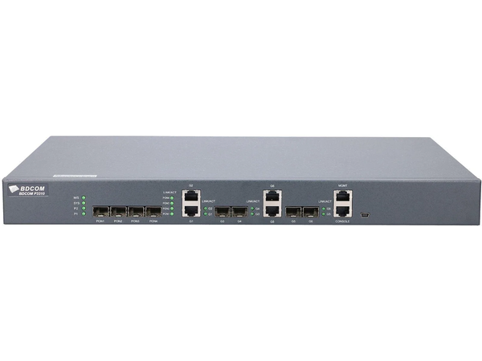
Рис. 2.2. Термінал BDCOM OLT P3310B
Таблиця 2.1. Характеристики станційного терміналу BDCOM OLT P3310B
| Характеристика | Значення |
|---|---|
| Мережний інтерфейс | 10/100 BASE-TX Fast Ethernet (включно зі слотами розширення SFP — Small Form-factor Pluggable, змінний оптичний модуль) |
| Енергоспоживання | 220~240 В, 50/60 Гц (є можливість опціонального резервного джерела) |
| Кількість PON-портів | 4 порти (швидкість 1 Гб/с), обслуговують 256 абонентів (1:64) |
| Вага та охолодження | 2.09 кг; Підтримує перерозподіл доступної смуги (DBA — Dynamic Bandwidth Allocation) |
Кожному абоненту вдома ставиться ONU (Optical Network Unit), іноді її ще називають ONT. Цей компактний пристрій перехоплює оптичний сигнал та конвертує його в електричний (RJ-45) для роутерів.
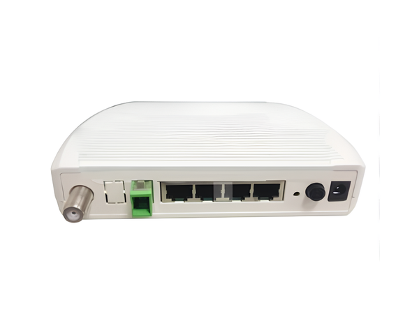
Рис. 2.3. Абонентський термінал ONU BDCOM P1004R
Таблиця 2.2. Характеристики абонентського терміналу ONU BDCOM P1004R
| Характеристика | Значення |
|---|---|
| Інтерфейси користувача | 4 порти Ethernet 10/100 Base-T (RJ-45); 1 RF-порт (Radio Frequency / Радіочастотний) для телебачення |
| Інтерфейс PON | Симетрична швидкість передачі 1 Гбіт/с; механізми авторизації (MAC-адреса фізичного рівня) |
| Фізичні параметри | Діаметр мережі до 30 км; Чутливість приймача: не гірше -26 дБм; Потужність: 2-7 дБм |
Важливо: активні пристрої (OLT та ONU) найкраще використовувати від одного і того ж виробника для запобігання програмним конфліктам протоколу GEPON.
3.2. Пасивна інфраструктура (Оптичні кроси та бокси FOB)
Від OLT відходить багатоволоконний кабель. Аби витягти конкретне тонке скляне волокно, використовують оптичні кроси. Крос являє собою стандартний стійковий серверний "ящик 19 дюймів". До задньої панелі заходить загальний чорний кабель, в якому знаходяться волокна. Кожне волокно зварюється з оптичним пігтейлом — це заводський відрізок волокна, який на одному кінці голий, а на іншому має красивий пластиковий конектор (зазвичай синього або зеленого кольору).
З'єднання порту OLT із портом на кросі забезпечують оптичні патч-корди. Відмінність патчкордів від пігтейлів у тому, що патчкорд має міцні конектори по обидва боки, товщу пластикову оболонку і посилений кевларом (пружними нитками), а пігтейл вкрай тендітний і використовується лише всередині металевих боксів для відсутності навантажень.
Практична порада: Навіть у випадку, коли в мережі використовуються не всі волокна з оптичного кабелю, необхідно розварити їх усі. Це значно полегшить подальше розширення мережі, а у разі пошкодження робочого волокна по лінії — його можна буде оперативно замінити «вільним» волокном, що раніше не використовувалось.
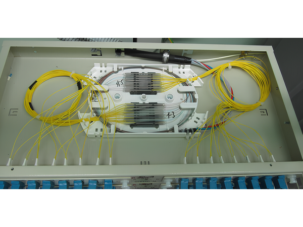
Рис. 2.4. Зварений крос на 64 порти типу LC
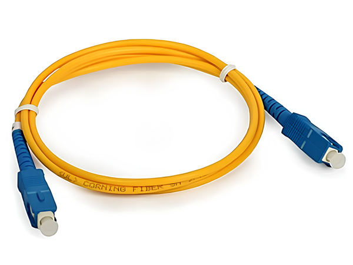
Рис. 2.5. Оптичний пачкорд типу SC (Оптичний адаптер)
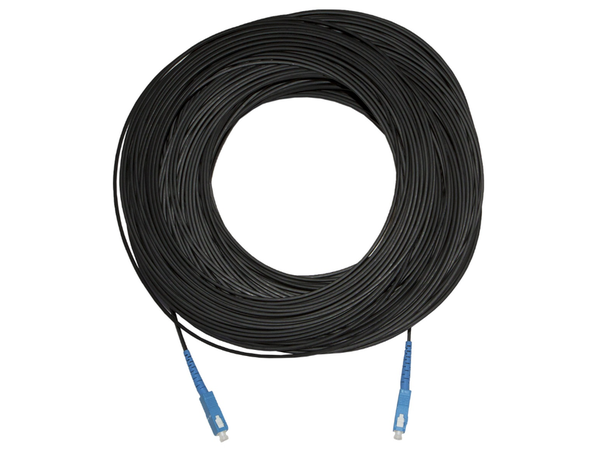
Рис. 2.6. Зовнішній патч-корд з кевларом
По колодязях або електричних стовпах кабель йде до розподільчих шаф — оптичних боксів FOB (Fiber Optic Box). Наприклад, класичний вітчизняний Crosver FOB-03-12 — це чорний пластиковий короб, пластик корпусу якого стабілізовано до УФ-випромінювання та морозів. Завдяки ущільнювачам з гуми всередину не потрапляє ні пил, ні волога струменями води. Всередині є зручні відкидні сплайс-касети (панелі для зварки), куди монтуються металеві захисні гільзи зварних з'єднань і кронштейни для 8-ми адаптерів типу SC. Конструкція змінних ущільнювачів введення кабелів дозволяє ввести в бокс петлю кабелю, не розрізаючи самого кабелю. Спеціальний гвинт фіксації кришки обмежує доступ стороннім особам усередину боксу.
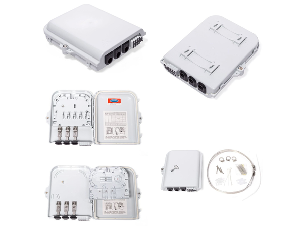
Рис. 2.7. Внутрішня будова оптичного боксу Crosver FOB-03-12 (сплайс-касети та порти)
3.3. Пасивне обладнання: Оптичні конектори та типи полірування
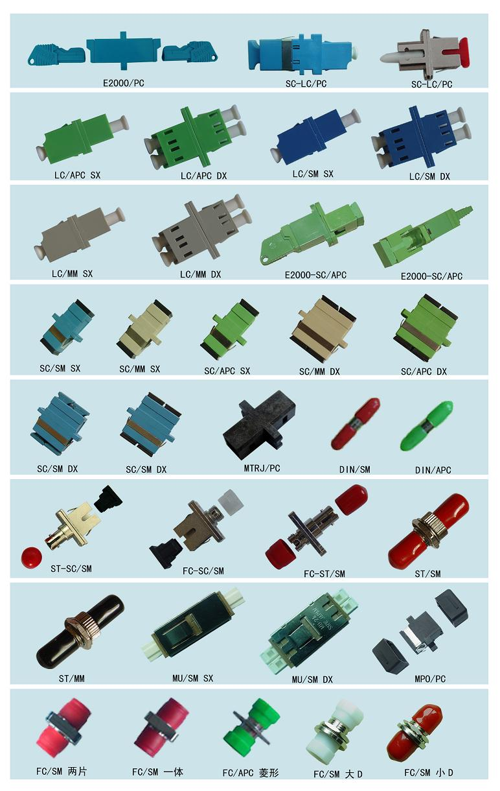
Рис. 2.8. Розмаїття оптичних конекторів та сполучних розеток (адаптерів)
Для комутації обладнання індустрія розробила десятки видів оптичних конекторів. Як видно з рис. 2.8, вони відрізняються форм-фактором (розміром і механізмом фіксації) та кольором. До найбільш поширених належать:
- SC (Subscriber Connector): Великі пластикові конектори квадратного перерізу з механізмом лінійної фіксації "pull-push" (вставив до кліку). Це абсолютний стандарт для побутових абонентських терміналів ONU та розподільчих боксів FOB.
- LC (Lucent Connector): Зменшена копія SC з фіксатором-защіпкою (як на мідному конекторі RJ-45). Через компактний розмір використовується переважно в серверних для підключення оптичних трансиверів (SFP-модулів) у комутатори та OLT.
- FC (Ferrule Connector) та ST: Старіші оптичні роз'єми в металевих круглих корпусах з різьбою або байонетним замком (як у BNC). Стійкі до вібрацій, тому часто застосовуються на промислових об'єктах та магістральних кросах.
- E2000: Високотехнологічні європейські конектори з автоматичною пластиковою або металевою шторкою. При вийманні патчкорду шторка закриває скло, що захищає сітківку ока від лазера та запобігає потраплянню пилу на лінзу. Використовуються в телекомі преміум-класу.
- MU (Miniature Unit): Схожий на зменшений удвічі варіант SC (Push-Pull). Популярний у високощільних панелях спеціалізованого обладнання.
- MTRJ та MPO/MTP: Багатоволоконні конектори. Один компактний роз'єм MPO може містити одразу 12, 24 або навіть 72 волокна (стрічковий кабель). Це абсолютний стандарт для побудови "позамежних" швидкостей 40G/100G/400G всередині надважких Data-центрів (ЦОД).
- DIN: Металевий конектор з фіксатором, що нагадує телевізійний, розроблений Німецьким інститутом стандартизації. Часто зустрічається у дорогому вимірювальному оптичному обладнанні (рефлектометрах) та медичній апаратурі.
🎨 Кольорове маркування: UPC проти APC
Колір пластикового корпуса конектора — це не просто декор, а жорсткий технічний стандарт полірування (шліфування) торця скляної жили:
- Сині конектори (UPC - Ultra Physical Contact): Торець скла відшліфований ідеально рівно (перпендикулярно, під кутом 90 градусів). Використовуються переважно в класичних LAN-мережах та серверних.
- Зелені конектори (APC - Angled Physical Contact): Торець скла скошений під кутом 8 градусів. Завдяки скосу, світло відбивається "у стінку" оболонки і розсіюється, а не повертається назад у лазер. Це критично важливо для гіперчутливих мереж, тому в PON застосовуються майже виключно зелені конектори APC.
⚠️ КРИТИЧНА ПОМИЛКА: Ніколи не можна з'єднувати синій конектор із зеленим! Через наявність кута в одному і рівної поверхні в іншому, при затисканні в адаптері вони розкришать і подряпають один одного. З'єднання "синій-в-синій" та "зелений-в-зелений" (через відповідний адаптер такого ж кольору) є обов'язковим правилом.
3.4. Дільники оптичної потужності (Сплітери FBT і PLC)
Суть пасивної мережі полягає в оптичних сплітерах, що ділять світловий пучок на кілька променів без використання струму:
- FBT (Fused Biconical Taper) — Зварний дільник. Його виготовляють розтягуванням двох зварених волокон. Головна унікальність FBT: він здатний ділити сигнал "несправедливо" (асиметрично, у відсотковому відношенні). Наприклад: 5%/95%, або 30%/70%. Це використовують, аби залишити більше потужності для транзиту по лінії вглиб селища, "відщипуючи" для найближчого будинку лише мінімум. Виробники позначають відсотки кольором кембриків на проводах дільника.
- PLC (Planar Lightwave Circuit) — Планарний дільник. Технологічний аналог мікропроцесорів. Лазером на кварцовому склі витравлюють доріжки-хвилеводи. Вони ділять потужність абсолютно порівну: на 2, 4, 8, 16, 32 або 64 промені. Забезпечують ідеальні характеристики на всьому діапазоні довжин хвиль без спотворень.
Спосіб з'єднання FBT та PLC: Оскільки на кінцях проводів PLC-дільника розташовані оптичні конектори, виникає запитання — як саме їх сполучити зі зварним дільником FBT, на виходах якого розташовані голі волокна? Відповідь полягає у тому, що конектор з одного волокна PLC відрізається, завдяки чому стає можливим провести зварювання його із необхідним волокном FBT-дільника. Далі за допомогою зовнішніх оптичних патч-кордів відбувається з'єднання решти роз'ємів PLC із абонентськими терміналами ONU.
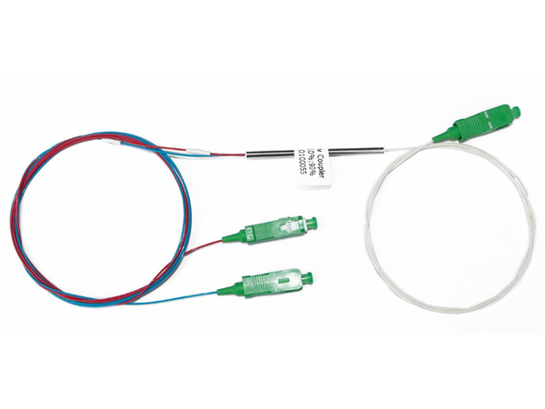
Рис. 2.9. Зварний дільник сигналу FBT (крупним планом)
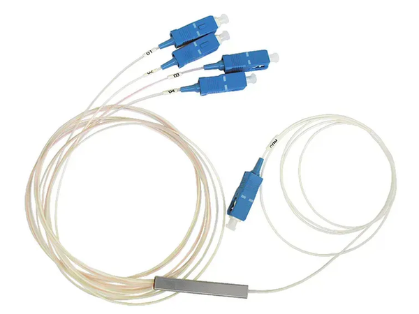
Рис. 2.10. Планарний дільник сигналу PLC (крупним планом)
4. Топології мережі PON у практичному інженерному розгортанні
Завдяки комбінуванню FBT та PLC дільників, пасивна мережа може набувати різноманітних геометричних форм на місцевості. На базі одного BDCOM OLT (4 PON-порти) можливо побудувати до чотирьох незалежних оптичних структур ємністю 64 абонента кожна (разом до 256 абонентів). Розглянемо три основні топології детально.
4.1. Топологія «Зірка» на основі PON
У класичному вигляді в PON будь-якої топології використовується одне «батьківське» волокно на 64 абонента (один PON-порт OLT обслуговує до 64 ONU). Якщо всі потенційні клієнти сконцентровані в радіусі 200–300 метрів від деякої центральної точки — будується «Зірка». Така топологія зручна для приватного сектору старого зразка: одно- або двоповерхові будівлі на 4–8 квартир з високою щільністю забудови.
Для побудови «Зірки» потрібно вибрати точку, по можливості рівновіддалену від усіх потенційних абонентів. У цій точці встановлюється планарний дільник PLC 1x64. До дільника з боку OLT підводиться кабель якомога меншої ємності (1 або 2 волокна). Кабель більшої ємності не має сенсу, оскільки дільник 1x64 навіть при щільній забудові покриє значну площу і забезпечить підключення до 64 абонентів (це четверта частина ємності OLT).
Варіанти підключення абонентів. Їх існує два:
Перший варіант (найпростіший, але найменш грамотний): виведення з точки ділення індивідуального зовнішнього патч-корду для кожного абонента. Тобто є коробка з дільником 1x64, і при підключенні нового абонента спеціаліст з'єднує прокладений до будинку патч-корд з одним із виходів дільника. Проблема в тому, що вже при 20 підключених абонентах коробка починає являти собою «вибух на макаронній фабриці»: незрозуміло, які патч-корди чиї, які з них робочі — повна дезорієнтація та неестетичний вигляд.
Другий варіант (більш грамотний): вибирається будинок або група впритул розташованих будинків і підраховується кількість потенційних абонентів. Від центральної коробки у напрямку цих будинків відводиться кабель потрібної волокнистості, який з одного боку сполучається з виходами дільника. Друга сторона кабелю розварюється безпосередньо поряд із групою абонентів у меншій коробці (наприклад, PON BOX 12 або 16), звідки кожному абоненту заводиться волокно прямо в будинок.
Розрахунок радіусу покриття «Зірки» (PLC 1x64):
Втрати на дільнику 1x64 з урахуванням механічних з'єднань: 21,5 + 0,5 + 0,5 = 22,5 дБ.
Різниця між втратами і оптичним бюджетом системи: 30 − 22,5 = 7,5 дБ.
Стандартний запас «на всяк випадок»: 3 дБ.
Залишковий оптичний бюджет: 7,5 − 3 = 4,5 дБ.
Сумарна довжина волокна при згасанні 0,36 дБ/км (на хвилі 1310 нм): 4,5 / 0,36 = 12,5 км.
Висновок: навіть якщо OLT знаходиться на відстані 5 км від дільника, в радіус дії потрапляють абоненти на відстані до 7,5 км!
Альтернативна варіація «Зірки» (1x2 + 2×1x32). Замість одного масивного дільника 1x64 можна використати групу з трьох: один PLC 1x2 та два PLC 1x32. Дільник 1x2 встановлюється відразу після SFP-модуля OLT (можна прямо туди й «увіткнути»). Його виходи з'єднуються з двохволоконним кабелем, що прокладається у бік абонентів. Далі — або розрізати кабель і вивести обидва волокна на два дільника в одній коробці, або залишити один дільник у першій коробці, а кабель із рештою волокном пустити транзитом до наступної. Таким чином покривається територія «овальної» форми. Бюджет втрат при цьому (навіть при використанні більшої кількості механічних з'єднань — нехай їх буде 3): 4,3 (PLC 1x2) + 21,5 (PLC 1x32) + 0,5×3 (мех. з'єднання) = 27,3 дБ — система впевнено вписується в оптичний бюджет 30 дБ.
Незважаючи на ефективність, «Зірка» використовується рідко: для неї потрібні надто ідеальні умови розгортання, а радіус понад 300–400 метрів неефективний через велику витрату оптичного кабелю на розводку.
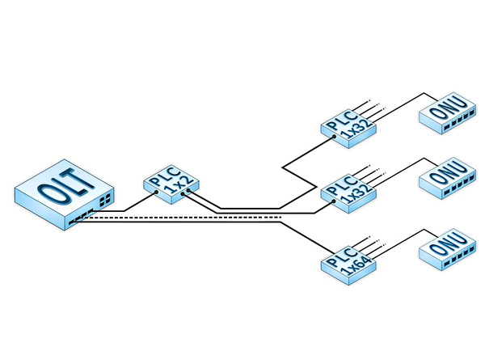
Рис. 2.12. Можливі види топології PON типу «Зірка» (1x64 та 1x2+1x32)
4.2. Топологія «Дерево»
Оскільки GEPON в класичному вигляді має деревоподібну структуру, це найбільш поширена топологія. Мережа має «корінь» (PON-порт OLT), «гілки» (оптичні кабелі від OLT до ONU) та «листя» (самі ONU). На базі одного BDCOM OLT можливо побудувати 4 дерева ємністю 64 абонента кожне. Усі дерева умовно поділяються на два типи.
4.2.1. «Самотньо-зростаюче дерево»
Перший тип дерев використовує географічно незалежні один від одного вузли поділу, тобто дерево «виростає» окремо від інших. Кожен порт OLT обслуговує до 64 абонентів, використовуючи окремий кабель на кожен напрямок.
Приклад побудови: На стороні провайдера, відразу за OLT, встановлюється дільник PLC 1x8, який одною стороною підключається до PON-порту, а іншою — до восьмиволоконного кабелю, який грає роль «стовбура» майбутнього дерева. По мірі необхідності «стовбур» ріжеться, від нього відгалужується і розварюється одне волокно, з якого починає рости «гілка» на 8 абонентів, а інші волокна продовжують йти далі. Кожне відгалуження від основної магістралі може бути виконане з використанням дільника PLC 1x8 або комбінації 1x2 і 1x4.
Переваги: простота розуміння процесу побудови, зручне освоєння конкретного напряму (один порт — один мікрорайон із можливістю розгалуження «на місці»). Головний недолік: відхилення від концепції економії волокна — використовуються 4 незалежних багатоволоконних магістральних кабелів для побудови мережі на 256 абонентів під управлінням одного OLT.
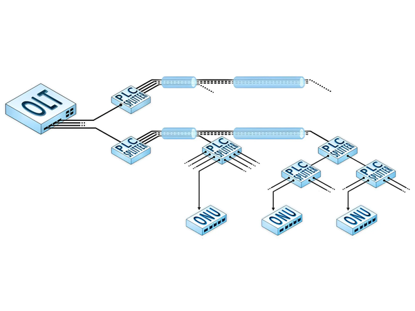
Рис. 2.13. Можливий вигляд топології PON типу «самотньо-зростаюче дерево»
4.2.2. «Мультидерево» (лісопосадка)
Спосіб проєктування такого дерева більш елегантний, але складніший. Саме цей тип є класикою побудови деревовидних пасивних мереж. Класичне PON-дерево зручно розгортати в невеликих населених пунктах або мікрорайонах з високою щільністю забудови і великою кількістю потенційних абонентів.
Основним завданням інженера є грамотний вибір місця розташування вузлів поділу. Фактично, мережа представляє собою N незалежних дерев (де N кратне чотирьом) в одному магістральному кабелі. Кратність чотирьох обумовлена тим, що OLT має 4 PON-порти, кожен з яких здатний керувати деревом з 64 абонентами. Якщо планованих підключень 256 або менше — встановлюється один OLT і «мультидерево» будується на 4-хволоконному кабелі. Якщо підключень більше — використовується кілька OLT і більш ємний кабель.
Проєктувати таку мережу зручно, розбиваючи житловий масив на квадрати (квадратно-гніздовий спосіб) і встановлюючи в центрі кожного квадрата дільник PLC 1xM, що забезпечує транспорт сигналу на M напрямів усередині цього квадрата.
Алгоритм поетапного розвитку «Мультидерева»: Після того, як окреслені основні вузли поділу і прокладений магістральний кабель, від кореня N-волоконного кабелю задіюється перше волокно (починає рости стовбур першого «самотньо-зростаючого» дерева). У всіх вузлах ділення це волокно з'єднується необхідними дільниками, а інші волокна залишаються «розірваними». Як тільки будь-який з абонентських дільників на певному напрямку повністю заповнюється — в цьому ж напрямі починає розвиватися друге волокно, і так до тих пір, поки всі волокна не будуть зайняті.
Переваги мультидерева: економія волокна та простота включення нового абонента. Недоліки: складність початкового проєктування та ризики, пов'язані з неправильним плануванням числа абонентів.
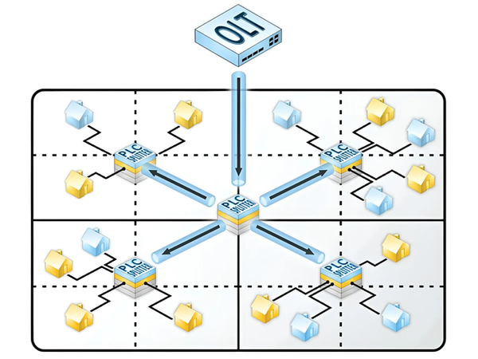
Рис. 2.14. Квадратно-гніздовий спосіб проєктування мультидерева з планарними дільниками 1x4
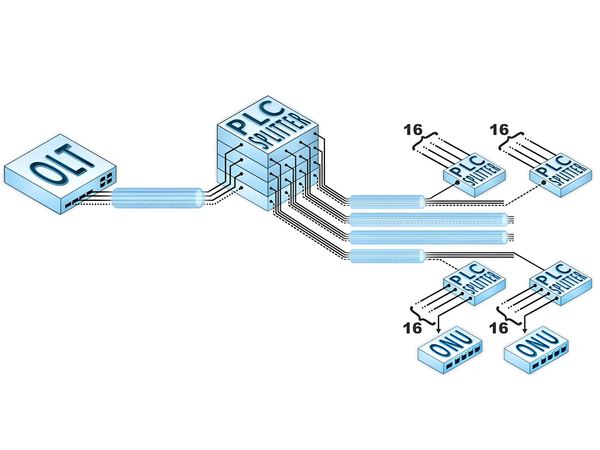
Рис. 2.15. Основний вузол ділення при розвитку топології PON типу «мультидерево»
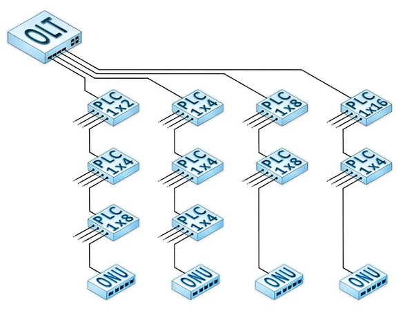
Рис. 2.16. Основні способи розгалуження пасивного дерева
Два золоті правила проєктування PON-дерева:
А) «Правило тридцяти децибел»: оптичний бюджет втрат від OLT до найвіддаленішого ONU необхідно «покласти» максимум у 30 дБ.
Б) «Правило поділу на 64»: жодне волокно, що виходить з PON-порту OLT, не повинно бути поділено більше ніж на 64 частини, і до нього не має бути підключено понад 64 ONU.
«Мультидерево» може бути побудовано на базі будь-яких дільників: зварних FBT 1x2 з процентним співвідношенням потужності вихідних сигналів, або планарних PLC 1x2, 1x4, 1x8, 1x16 з рівними показниками загасань на кожному виході. Концепція PON-дерева передбачає, що пасивна мережа може бути побудована на базі комбінації будь-яких дільників — за умови дотримання обох золотих правил.
4.3. Топологія «Шина» (рішення для лінійних поселень)
Дуже часто на території України зустрічаються невеликі населені пункти (селища, села), що являють собою одну або кілька паралельних довгих вулиць. «Дерево» і «Зірку» в таких населених пунктах розгортати немає сенсу: це незручно й дорого. Єдиний вихід — «Шина».
«Шина» в GEPON-мережах розгортається на одному волокні з використанням каскаду зварних дільників FBT 1x2 з процентним співвідношенням потужності вихідних сигналів. При цьому вхід першого дільника підключається до PON-порту OLT, а далі будується за принципом «більша потужність — у лінію»: велика потужність вихідного сигналу надходить у магістральну лінію і живить весь подальший каскад дільників, а менша вихідна потужність відводиться для підключення абонентів.
Чому не можна підключати кожного абонента окремим FBT? Як показує практика, робити одне відгалуження для одного конкретного абонента незручно з трьох причин:
- збільшується кількість зварок на магістральному волокні, що знижує якість сигналу, особливо на останніх ділянках каскаду;
- зростає складність включення нового абонента в центр уже існуючого каскаду: при зварних роботах тимчасово відключаються всі абоненти нижче по каскаду;
- порушується загальна схема загасання в лінії, що негативно позначається на якості сигналу в останніх абонентів.
Вихід із ситуації полягає в комбінуванні зварних дільників FBT 1x2 (з процентним розподілом) та планарних дільників PLC 1x2, 1x4 і 1x8. При цьому зберігається шинна топологія, але відгалуження сигналу іде не на одного абонента, а на групу абонентів, які можуть бути розташовані в радіусі 200 і більше метрів від планарного дільника.
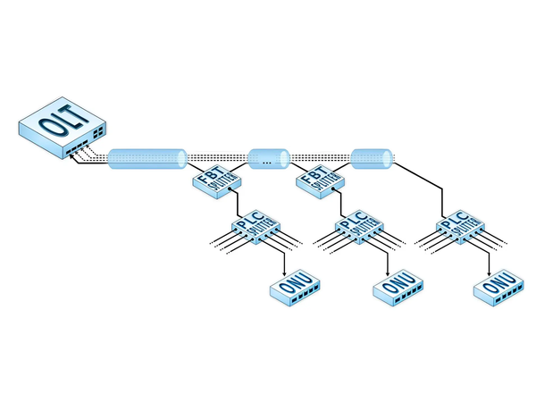
Рис. 2.17. Топологія PON типу «Шина» з комбінацією FBT та PLC дільників
Ця схема зручна тим, що при грамотному плануванні мережа стає легко масштабованою, а підключення нового абонента виконується у три кроки:
- прокладання зовнішнього патч-корду від планарного дільника до абонента;
- підключення патч-корду до відповідного роз'єму PLC-дільника;
- підключення патч-корду до абонентського ONU.
Крім того, топологію «Шина» зручно використовувати у випадках, коли вулиці досить ємні за кількістю абонентів і водночас мають значну протяжність. У цьому разі «близькі» до OLT абоненти обслуговуються однією шиною (одним волокном і одним PON-портом), а більш віддалені — іншою шиною (іншим PON-портом).
Розрахунки і практика показали, що найбільша ефективність «Шини» досягається при комбінуванні зварних дільників FBT 1x2 і планарних PLC 1x4 та 1x8. Для досягнення стабільного сигналу на всіх ONU в каскаді повинні бути встановлені зварні дільники у такій послідовності (від голови до кінця лінії): 5%/95%, 10%/90%, 20%/80%, 30%/70%, 40%/60% і 50%/50%.
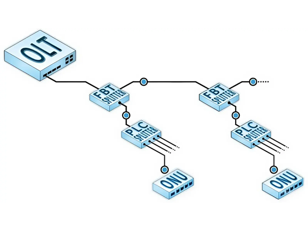
Рис. 2.18. Включення зварного дільника в магістральну лінію без використання механічних з'єднувачів
Важливе інженерне правило Шини (захист від шкідливого випромінювання): Механічні з'єднання на зв'язці «вихід FBT → вхід PLC» (типу SC/UPC-SC/UPC) необхідні в будь-якому випадку для локалізації шкідливого випромінювання, яке може призвести до виходу з ладу всієї пасивної мережі. Наприклад, якщо ONU «підвисла» або конкуренти «запхали» медіаконвертер в один із виходів планарного дільника — механічне роз'єднання дозволяє швидко ізолювати проблемну ділянку без порушення роботи всієї магістралі.
Отже, у процесі вивчення даної лекції визначено специфіку побудови мережі за технологією PON. На прикладі нескладної схеми розкрито зміст та особливості роботи кожного вузла PON-мережі. Висвітлено технічні характеристики обладнання. Виокремлено переваги використання PON-технології в сучасній інженерно-технічній практиці з побудови мереж.
Контрольні питання:
- Що таке оптичний патч-корд? Чим він відрізняється від пігтейла?
- Яка специфіка функціонування та особливості апаратного забезпечення PON-мережі?
- Чим принципово відрізняється побудова GEPON від сучасних мереж GPON та XGS-PON?
- Поясніть механізми передачі потоків Downstream (Broadcast) та Upstream (TDMA) за довжинами хвиль.
- Розшифруйте абревіатуру ODN. Що входить до її складу?
- У чому полягає відмінність між дільниками FBT (зварними) та PLC (планарними)?
- Що таке FOB? Які його конструктивні особливості?
- Назвіть два варіанти побудови топології «Зірка». Що таке ефект «вибуху на макаронній фабриці»?
- Чим відрізняється «самотньо-зростаюче дерево» від «мультидерева» (лісопосадки)? Опишіть квадратно-гніздовий спосіб проєктування.
- Сформулюйте два «золоті правила» проєктування PON-дерева.
- Для яких географічних умов топологія «Шина» є оптимальним рішенням? Чому не можна підключати кожного абонента окремим FBT?
- Опишіть процедуру підключення нового абонента до «Шини» у три кроки.
- Чому між виходом FBT і входом PLC на шині обов'язково потрібне механічне з'єднання?